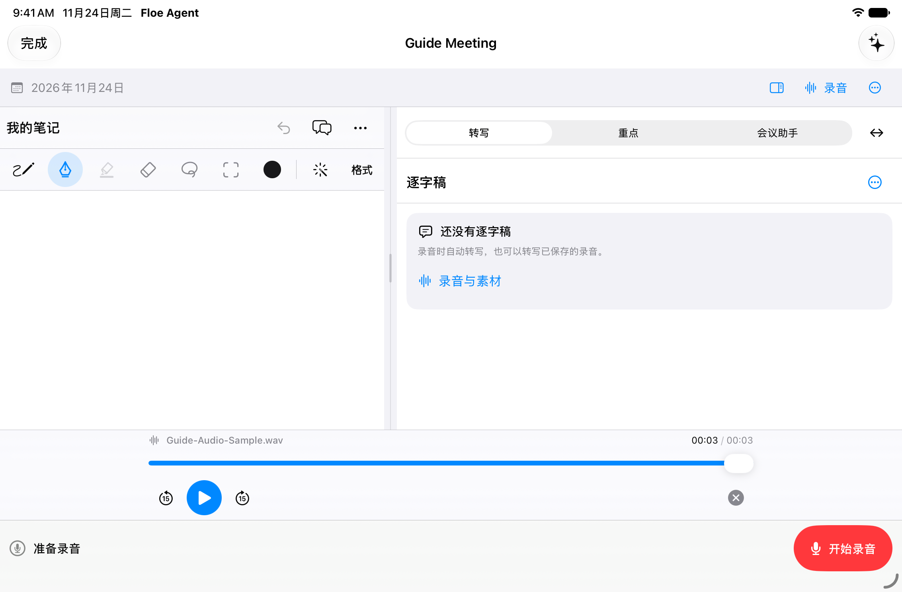
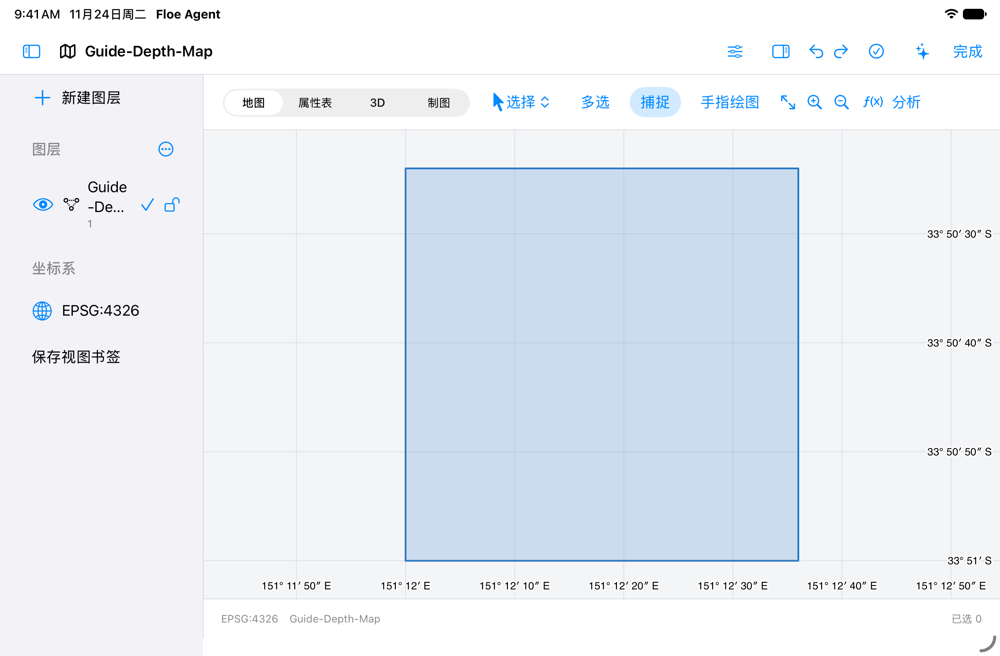
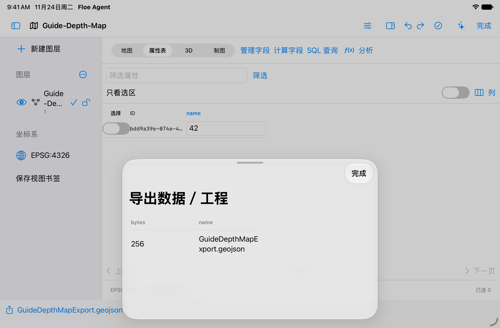

Espacio y bancos de trabajo especializados
Descripción general
简体中文 · Manual de usuario · Inicio rápido
Tutoriales basados en tareas para la biblioteca personal de Floe y bancos de trabajo dedicados: archivos espaciales y obras, reuniones, música, diagramas, fabricación e impresión 3D, la caja de herramientas de red y proyectos de química. Para modelos, tareas, notas y conceptos básicos de Office, lea el Manual de usuario Primero.
¿Qué construcción necesito?
Los canales de Floe tienen diferentes conjuntos de características. Las etiquetas a continuación identifican la línea de base de lanzamiento de un flujo de trabajo; las versiones actuales del canal y las fechas de verificación se mantienen en ESTADO_ACTUAL:
| Etiqueta | ¿Dónde lo consigues? | Lo que cubre aquí |
|---|---|---|
| 1.7.74 | App Store, iOS/iPadOS 26+ | El lanzamiento público estable. Solo se aplican las secciones etiquetadas 1.7.74; el espacio y los bancos de trabajo especializados aún no están en esta compilación. |
| 1.8.5 línea de base | Lanzamiento original; Siga el estado del canal al elegir un instalador más nuevo | Línea de base del tutorial original para el espacio, reuniones, música, diagramas, fabricación e impresión, la caja de herramientas y química. |
| 1.8.6 adiciones | IPA publicada sin firmar; La disponibilidad de TestFlight es independiente | Se incluyen las entradas de análisis de ingeniería LaTeX, esquemático/PCB, biología y CAD; PCB avanzado y el trabajo de simulación siguen en curso. |
| Otros editores especializados | Compruebe la versión seleccionada y el registro de integración | GIS, el diseño de fuentes, la notación y Image Playground tienen un alcance y una calificación separados; los cambios de desarrollo no se realizan automáticamente en su instalador. |
Encuentre su versión instalada en Configuración → Diagnósticos y Acerca de. La disponibilidad por canal se rastrea en Estado de lanzamiento e instalación; El Centro de liberación Enumera cada compilación publicada.
1. Espacio: sus archivos y obras — 1.8.5

New screenshots in this guide show Floe 1.8.72 (393) in the iPad Simulator.
El espacio es la casa de la barra lateral para todo lo que posee personalmente en Floe: la biblioteca de Notas más una biblioteca de obras y archivos editables.
Choose a workbench in Descripción general based on what you want to make. Name the project and choose where to keep it. Use Continue working Oregón Files to reopen the project later.
| What you are working on | Which feature to use | Typical result |
|---|---|---|
| Class notes, reading annotations or reference material | Notas. Keep handwritten and annotated pages in documents. | Notes you can keep adding to |
| Meeting audio, transcripts and decisions | Meeting Notes. Keep the audio, transcript and highlights together. | Recording, transcript and minutes |
| Evolving drafts, reference images and candidate designs | Canvas in Creative Mode. Arrange and compare objects on a board. | A board you can keep arranging |
| Processes, sequences, relationships or system structure | Diagram. Use shapes and connections to show relationships. | An editable diagram |
| Photo corrections, cover art or a transparent icon | Drawing / image. Work with text, strokes, selections and masks on layers. | An editable image project and a PNG or other image |
| Cutting clips, adding music and lining up subtitles | Vídeo. Align picture, sound and captions on a timeline. | A video project and MP4 |
| Arranging melodies or keeping musical parts separate | Music project. Arrange notes, audio and instruments on tracks. | An editable song, audio or MIDI |
| Plans, parts, floors or circuits | 2D Design, 3D Design, Building Project or Electronics Design. Choose according to whether you are working with dimensions, solids, storeys or circuits. | A drawing, solid, building project, schematic or PCB |
| Viewing geographic data or inspecting regions by field | Map Editor. Work with layers, features, attributes and coordinate systems. | A map project or layer data |
| Typesetting a paper, equations and references | LaTeX document. Edit the source and compile to inspect the result. | LaTeX project and PDF |
| A quick calculation, conversion or measurement | Toolbox. Open the utility for the immediate job. | A calculation, dimension or angle |
Primer recorrido:
- Abrir Espacio Desde la barra lateral. Tiene cuatro secciones: Descripción general, Notas, Archivos y Caja de herramientas.
- La descripción general muestra las entradas de acceso rápido, los trabajos anclados, sus carpetas y Continuar trabajando (notas y trabajos abiertos recientemente).
- Los archivos enumeran sus obras. Cambie entre lista y miniaturas, y filtre por tipo: documentos, dibujo/imágenes, vídeo o CAD.
- To start a particular kind of work, open its shortcut or workbench under Descripción general. To choose a destination first, open the folder under Files, then choose a type from +. Enter a name, check Location, and tap Create. Start blank notes and meetings from Notes → +.
- Utilice la importación para traer archivos existentes, o Explorar otras ubicaciones... Para acceder a todos los archivos del espacio de trabajo, archivos de chat archivados y documentos guardados (recuperados). Las obras eliminadas se pueden restaurar desde Eliminado recientemente.
Propiedad y ahorro:
- Las obras se almacenan en la biblioteca personal de su dispositivo. No pertenecen a ninguna tarea de chat: eliminar un chat nunca elimina un trabajo, y eliminar un trabajo nunca afecta a los archivos de tareas o proyectos. Exporte cualquier cosa importante antes de eliminarla.
- Los editores ahorran en el trabajo en sí. Cierre y vuelva a abrir un trabajo de Continuar trabajando para confirmar su último estado; las copias de recuperación se quedan en Documentos guardados hasta que acepte el archivo guardado.
- Un trabajo puede llevar su propia conversación de asistente (asistente de trabajo o asistente de reunión para reuniones). Esa conversación es parte del trabajo y mantiene los borradores no enviados; otorgar acceso al asistente a un trabajo no abre ningún otro archivo.
2. Reuniones: registro, transcripción, actas — 1.8.5
Las reuniones combinan un cuaderno personal, grabación en vivo, transcripción y minutos de IA en un solo trabajo, abierto desde Notas.
Primera reunión:
- Abrir Space → Notes → + → Meeting Note, type a name and create it. In landscape, My Notes is on the left. Switch among Transcripción, Aspectos destacados Y Meeting Assistant on the right.
- To capture a meeting, use Start Recording at the bottom right. To work with a file, open Recordings and Media → Import Audio or Video. Enable live transcription if needed, or transcribe a saved recording later.
- Review the transcript under Transcripción and organize minutes and to-dos under Aspectos destacados. Review highlights before inserting them into your notes.
- Encender Minutos automáticos de IA Para mantener las actas actualizadas de la transcripción, o pedirle al asistente de la reunión que responda preguntas sobre esta reunión y organice notas y cosas por hacer. Se guardan los borradores no enviados.
- Exportar Word o PDF minutos de texto Desde el menú de plantilla de minutos, y envíe acciones de seguimiento de nuevo a su flujo de tareas.

Grabación continua en compilaciones más nuevas: Pausa y reanuda dentro del cronograma de grabación de la misma reunión. Después de terminar la grabación, reprócala y toca un segmento de transcripción para buscar su tiempo. Renombrar los altavoces existentes o fusionar identidades que se refieren a la misma persona; la separación del altavoz depende del servicio de reconocimiento seleccionado. Vuelva a abrir la reunión para revisar su registro, marcas de tiempo y transcripción corregida.
Play an imported recording. In Recordings and Media, select the imported file and tap Play Full Recording. The player appears at the bottom of the meeting screen. Pause or scrub to review it. In the transcript, select a timestamped segment to jump to its position. Check the transcript, highlights and action items before exporting minutes.

Límites: Las grabaciones se mantienen en el dispositivo por defecto; la transcripción en la nube utiliza un servicio que usted selecciona explícitamente y es facturado por ese proveedor. La calidad de la transcripción sigue su configuración de reconocimiento (consulte el manual de usuario §16).
3. Proyectos musicales — 1.8.5
Las obras de música espacial mantienen los flujos de trabajo de arreglo, teclado, mezclador y DJ en un solo proyecto.
Primer proyecto:
- En Espacio → Archivos, crea un Música Trabajo y nombre.
- El banco de trabajo ofrece arreglos más superficies dedicadas: rollo de piano, cuadrícula de batería, teclado y cubiertas de DJ, con un mezclador y efectos para pistas.
- Importa material de audio o MIDI, o pídele al asistente que proponga ediciones; cada propuesta muestra qué cambia antes de aceptarla.
- El ahorro es automático en el trabajo. Renderiza cuando quieras un archivo de audio, luego comprueba el recibo con el archivo renderizado real y compártelo o expórtalo del trabajo.
Música en esta actualización de prueba: En Puntuación, cambie entre la notación de personal y numerada mientras edita y guarda la misma partitura. Sonidos de rendimiento abierto para elegir sonidos de instrumentos sintetizados para cada parte. Realizar y agregar renderiza audio, inserta una nueva pista en el cabezal de reproducción actual y regresa al arreglo cuando se complete. La reproducción ordinaria es para audiciones. Vuelve a Personal para ver marcas complejas omitidas en la vista numerada.
Graba desde el cabezal de reproducción en compilaciones más nuevas: Mueva el cabezal de reproducción al inicio previsto, elija grabación de audio o MIDI y, a continuación, realice. Las pistas sin silenciar existentes se reproducen junto a él y los clips más antiguos se mantienen. Deténgase, audicione el nuevo clip en la misma línea de tiempo, luego guarde y vuelva a abrir para comprobar su posición. La grabación de arreglos, las vistas previas de activos, el monitoreo y la grabación de DJ tienen sus propios controles; confirme Stop en la superficie apropiada antes de salir.
El teclado utiliza la altura disponible para sus teclas. En pantallas anchas, el inspector Mostrar / Ocultar el inspector abre o contrae el inspector derecho. Amplíe el editor inferior para un área de rendimiento más amplia.
Límites: La edición asistida por IA utiliza sus modelos configurados; la reproducción y el renderizado se ejecutan en el dispositivo y siguen las capacidades reales del proyecto.
4. Diagramas y el lienzo mixto — 1.8.5
Diagram works well when the sequence or relationship matters. For an approval process, give each action a shape and connect the shapes in order. Reopen the work from Space → Files to check that its shapes and links are complete. Review the assistant's proposed changes before applying them.
Creative Mode Canvas keeps notes, images, documents and options for a topic together. Select an object to edit its content, or move it to rearrange the board. When comparing several image or drawing versions, keep the deliverables in their workbenches and use the canvas to record references and comparisons. See the free-form editing walkthrough.
5. Fabricación e impresión 3D — 1.8.5
Mecanizado e impresión abierto a partir de un documento CAD Manufacturero Entrada.
Recorrido por el mecanizado:
- Abra su diseño 2D/3D CAD e introduzca Fabricación. Elige la máquina primero.
- Establecer stock, coordenadas y operaciones; el asistente puede volver a leer el objeto actual y sugerir operaciones dentro de los permisos de la tarea.
- Ejecute la vista previa para ver el material que se elimina a lo largo de la ruta de la herramienta; las comprobaciones de colisión implementadas se informan a medida que se ejecutan.
- Guarde el resultado, exporte STL o la ruta de la herramienta y vuelva a abrir el resultado guardado para verificarlo. Los programas de células de fabricación (multihusillo/multitorreta) se guardan de forma independiente y se pueden leer más tarde.
Tutorial de impresión 3D:
- A partir de un diseño CAD o un archivo, prepare un proyecto de impresión; Floe copia la geometría actual en él.
- Organice los modelos en placas, agregue o duplique piezas y ajuste los ajustes por placa, como la altura de la capa y el relleno.
- Elija una configuración de máquina: tamaño de la cama, origen de coordenadas, desplazamientos de boquillas, código G de inicio/fin/cambio de herramienta personalizado y orientación de la plataforma de resina para impresoras de resina.
- Corte; un corte completado abre la vista previa automáticamente, y el resultado guardado permanece vinculado a esos parámetros. Exporte el código G que su impresora espera y compruébelo en su cortador o host.
Límites: Las vistas previas de mecanizado informan solo comprobaciones implementadas - no son una certificación completa de seguridad de la máquina. Los controladores de impresora USB nativos no están incluidos en esta compilación; use la ruta de transferencia normal de su impresora. La impresión física y el mecanizado se rigen por las capacidades reales de su máquina y las normas de seguridad.
6. Caja de herramientas de red — 1.8.5
Abrir Space → Toolbox. Choose a shortcut at the top, use the categories below, or search by tool name in the upper right. Toolbox holds both network sessions and day-to-day measurement tools.

- Diagnósticos: Ping, traceroute, DNS, comprobaciones de puertos, descubrimiento de LAN, información de Wi-Fi y comprobaciones de roaming. Los nombres de Wi-Fi y los BSSID solo se leen con la autorización del sistema; no se escanea nada hasta que lo inicias.
- Conexiones y sesiones: Clientes HTTP, WebSocket y MQTT, un asistente en serie (TCP, UDP o Bluetooth; USB necesita un iPad compatible y controladores aún no enviados), además de terminal y espacios de trabajo remotos VNC.
- Análisis: Navegador de captura con importación de captura de paquetes (PCAP/PCAPNG); el análisis de IA informa del progreso, se puede detener y se agota honestamente.
- Utilidades: Formato JSON, conversión de codificación, códigos QR y sumas de comprobación.
Herramientas de medición y cotidianos en construcciones más nuevas: Elija una herramienta de las entradas superiores, categorías o búsquedas que se pueden deslizar; la lista completa permanece a continuación.
- Nivel, sensores de movimiento, brújula, presión y altitud: Comience a ver las lecturas, use el cero ofrecido, bloquee o controles de grabación y detenga la recopilación cuando haya terminado. La brújula muestra el norte magnético; la altitud basada en la presión muestra un cambio relativo.
- Regla y protractor, medición de la cámara, medición de fotos: Calibra primero la regla de la pantalla contra un objeto real. La medición de AR necesita hardware compatible. En una foto, establezca una longitud de referencia conocida antes de medir longitudes, ángulos o áreas en el mismo plano, luego exporte anotaciones si es necesario. Vuelve a comprobar la calibración después de los cambios en la ventana o la pantalla.
- Calculadora y convertidor, ubicación y mapa: Evaluar expresiones o intercambiar unidades y copiar resultados. Después de otorgar acceso a la ubicación, inspeccione la posición y la precisión, luego guarde o comparta explícitamente un lugar o envíelo a Notas.
- Análisis de sonido, lupa y luz, escaneo y reconocimiento: Enciende el micrófono o la cámara explícitamente. Inspeccione los niveles de audio y el espectro relativos, amplíe o congele una vista, o escanee códigos y texto y exporte resultados. Las lecturas de audio no son calibradas por la presión de sonido ambiental.
- Cronómetro y temporizadores: Registrar vueltas, administrar cuentas regresivas con nombre y permitir alarmas del sistema cuando se le solicite. Consulte el manual de usuario §17 para los temporizadores de tareas de varias etapas; las alarmas del sistema y la ejecución de seguimiento del modelo son resultados separados.
Una medición cubre un punto final y una ruta, no toda su red. Los informes exportan solo lo que usted elige.
Calculate, convert and measure
- Abrir Calculator and Conversion, enter
2×3in Calculator, and tap Calculate. The result, 6, also appears in History. Use the copy icon beside the result when you need it elsewhere. - Abrir Unit Conversion, Elige Length, then millimetres and centimetres. Entering 1 gives 0.1 cm. Swap the units with the arrows to see 1 cm become 10 mm.
- Return to Toolbox and open Ruler and Protractor. In Angle, drag the handles and read the angle between the lines. Before measuring a real length on screen, align the blue marks to a reference of known size, then finish calibration. Before calibration, length appears in screen points.


7. Proyectos de química — 1.8.5
Crear un Proyecto de química Desde el espacio → Nuevo. El editor de estructura nativo guarda estructuras en el proyecto, los registros de cálculo se adjuntan a él y se puede hacer referencia a las imágenes de la estructura desde Notas. El recálculo pesado se ejecuta en su entorno de ejecución configurado; compruebe el entorno antes de un trabajo largo.
<a id="8-viene-en-la-next-actualización--next-update-no-in-public-builds"></a>
8. Bancos de trabajo adicionales y requisitos de construcción
Notas de la versión 1.8.6 Registre estas adiciones en el instalador publicado:
- LaTeX - Un banco de trabajo de proyecto, plegado de fuentes y búsqueda de texto completo PDF, con estado de lectura/búsqueda retenido en los cambios a pantalla completa.
- Electrónica/PCB — Edición esquemática/PCB, interacción del lienzo, comprobaciones de reglas de diseño y sincronización; las actualizaciones PCB-a-schematic incluyen una vista previa y confirmación de la diferencia.
- Biología y análisis de ingeniería CAD - Entradas de banco de trabajo nativas adicionales en el espacio, con trabajo de edición, vista previa y guardado/reapertura incluido en el alcance del lanzamiento.
Algunas operaciones avanzadas de PCB y simulación siguen en desarrollo; los controladores serie USB nativos no están incluidos en esa compilación. Estas notas de la versión no establecen que se hayan enviado todas las características especializadas o cambios posteriores de fuente.
Para GIS, diseño de fuentes, notación e Image Playground, consulte el Plan de integración especialista-editor, Registros de integración activos Y las notas de lanzamiento seleccionadas. La disponibilidad es específica de la función; la integración de la fuente por sí sola no establece la entrega.
Start a sketch in 3D Design
- Indio Space → Overview, open 3D Design, name it, and check its location. Open Sketch on the left for lines, rectangles, circles and other tools.
- Elegir Sketch → Rectangle and select a reference plane when prompted. To draw with your finger, enable Touch drawing using the hand icon on the left, then drag between opposite corners on the grid. Check that the four edges close. If dragging pans the view, check the switch, the rectangle tool and the current plane.
- Grifo Exit Sketching and select the interior of the closed profile. Under Features → Extrude, set the distance to
2 mm, Elige New Body and confirm. A5 × 3 mmrectangle should produce a solid2 mmthick. If you cannot select the interior, return to the sketch and look for gaps or overlaps. - Close and reopen the project by name in Space → Files to confirm the solid was saved. For a mesh delivery, use the share icon at the top and choose STL → Save to Files. Check its dimensions and orientation in the receiving app. Keep the 3D project for further editing. See the unified 3D workbench for more.


Choose the right workbench
| What you want to work on | Where to start in Space | What to check |
|---|---|---|
| Floor plans with rooms | Overview → Building Project. Choose a storey before editing walls, rooms or drawings. | Units, the selected storey, and which objects belong to it after reopening. |
| 2D lines and dimensions | Overview → 2D Design, or open an editable DXF or DWG from Files. | Selected layer, objects, dimensions and units. Save and reopen. |
| A typeset paper | Overview → LaTeX Document. Edit the project source and compile the PDF. | Build log and PDF pages. Keep both the project and the delivery PDF. |
| Schematics and PCB layouts | Files → + → Electronics. Edit the schematic before reviewing the component and net changes in PCB. | Review sync differences before applying and run design rule checks after routing. |
| Map data | Files → … → Import geographic data…, or choose Map Editor from the new-project menu. | Select a specific layer and check its coordinate system, visibility, attributes and exported geometry. |
| A molecule for a lesson | Overview → Chemistry Project. Open or draw a molecule in the structure editor. | Structure diagram, saved project and the status of any calculation. |
| Sequence material for teaching | Overview → Biology Project. Open a project and inspect a record or annotations. | Record name, annotation range, and which file is the original or an exported copy. |
Available formats and workbench options depend on the installed build.
2D Design: draw a rectangle and deliver a DXF
- Create a drawing in Space → Overview → 2D Design. Check that the upper-right unit is mm, enable Touch drawing on the left, and choose Rectangle. Drag between two corners on the grid. The example measures
6 × 4 mmwith a20 mmperimeter. If the size differs, check the units, snapping and all four corners. - Use the share icon at the top, choose DXF, and choose a destination in Files. Open the DXF in the receiving CAD app to check that the profile is closed and its dimensions match the project.
- Grifo Aceptar, then reopen the drawing by name in Space → Files and check its four edges. Use this drawing when continuing in Floe.

Maps: import, edit attributes and export GeoJSON
- Choose a GeoJSON file in Space → Files → … → Import geographic data…. Select its layer on the left, then tap Fit layer in the map toolbar. A small region may be hard to see at the initial world scale. Check that the layer is visible and contains features, then verify its coordinate system.
- Abrir Table, select a feature and tap the field to edit. Press Return to apply the value and wait for it to save. For a test polygon with a
namefield, give it a new name while keeping its boundary. Reopen the project and the attribute table to confirm the value persisted. - Touch and hold the specific layer row and tap Export layer to open Export data / project. Choose GeoJSON and turn off Include all vector layers when you only want the selected layer. With the coordinate-system field left blank, GeoJSON uses EPSG:4326. Name the export and tap Aplicar. Open the result and check the feature count, attributes and geometry.
- If the import reports Unexpected EOF, export a complete file again from the original GIS project or check whether the copy was truncated, then retry. Once it succeeds, open the new project in Space → Files to verify the layer.



Ahorro, exportación y ayuda
- Confirma los guardados cerrando y volviendo a abrir el trabajo; guarda las copias de recuperación hasta que se compruebe el archivo aceptado.
- Exportar o compartir antes de eliminar; las obras eliminadas se pueden recuperar desde Eliminadas recientemente solo en el mismo dispositivo.
- Preguntas e informes de errores: Problemas de GitHub (Canal de soporte principal); describa la construcción, el dispositivo y los pasos. Las cargas de diagnóstico son voluntarias y no tienen garantía de tiempo de respuesta, nunca incluyen contraseñas, claves o archivos privados.